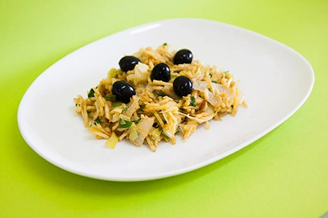

Alho-Francês à brás

One of the most famous recipes of Portugal
An extremely easy recipe to do! With a fast preparation time, cooking time, and it's great flavor to boost! It will melt any doubts that your friends have about your cooking skills and will help you conquer them.
It's one of the most delicious recipes for anyone! Even if you don't eat meat or fish! Let's dive right into the ingredients and make you a chef.
Ingredients:
- 60 ml of olive oil
- One finely shopped garlic
- 250g of the white part of leek
- 1 bay leaves
- 200g of shoestring potatoes
- 4 eggs
- salt enough for your taste
- pepper enough for your taste
- A little parsley
- Some black olives
Steps:
- Crack the eggs into a bowl. Season with sal and pepper. Beat well with a wire rod and reserve.
- In a pan, heat the oil, bay leaf and onion. Stir and sauté a little then add the leek. Mix and let it cook without browning for approximately 5 minutes over medium heat.
- Add the potato. Mix and let it warm up well!
- Add the eggs, mix and cook over medium heat for aproximately 30 seconds. Be careful to overcook the eggs.
- Finally, sitr in the chopped parsley and remove from the head. Let it rest for at least 2/3 minutes and serve the dish with olives on top. Good Appetite!